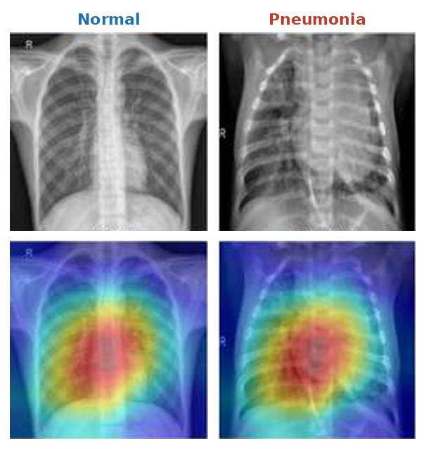

Conference · IEEE
DualGateNet: Explainable Pneumo 16 L Hybrid SE-ResNet50 and Vision Transformer Learnable Fusion
2026 IEEE Chandigarh Subsection International Conference (CHANDICON), 2026
A dual-branch SE-ResNet50 + ViT-B/16 model with a learnable fusion gate and dual-stream explainability (Grad-CAM++ and Attention Rollout) for pneumonia detection from chest X-rays — AUC 0.967 on the Kermany dataset.
DOI
BibTeX
@inproceedings{chauhan2026dualgatenet,
title = {{DualGateNet: Explainable Pneumo 16 L Hybrid SE-ResNet50 and Vision Transformer Learnable Fusion}},
author = {Abhishek Singh Chauhan and Varsha Mittal},
booktitle= {2026 IEEE Chandigarh Subsection International Conference (CHANDICON)},
year = {2026},
doi = {10.1109/chandicon70877.2026.11767777}
}